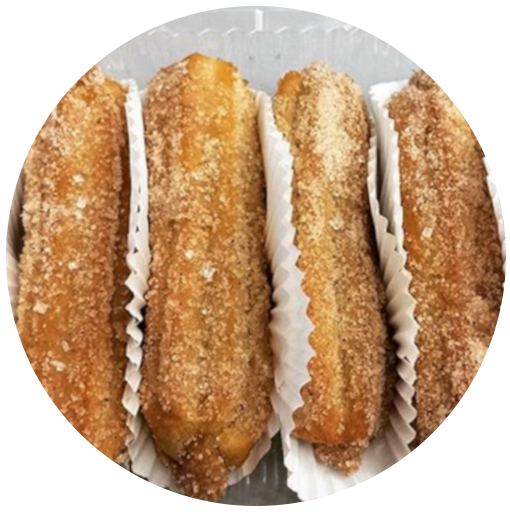

We Specialize in Authentic Latin Sweets

Delicious Churros

Authentic Peruvian Alfajores
Wide Array of Cakes
Delicious Churros
Authentic Peruvian Alfajores
Wide Array of Cakes


Welcome to Jack and Syl’s Gourmet Sweets! A business founded by two sisters, Jaqueline and Sylvia Elcorrobarrutia. Our company strives to bring authentic Latin baked sweets to our clients. My sister and I have always had a passion for cuisine, especially for desserts and sweets due to the heavy emphasis on these in our culture; eventually prompting us to take a culinary class together in 2013.
Growing up, our parents would always teach us the family tradition of baking. I remember my mama would always take the time to bake cakes and sweets with love for all of our family gatherings, such as weddings and birthdays; something we have decided to bring to our local business. Our extended family also inspired us to pursue our dream. Visiting my grandparents’ house was always like a party; cooking and baking every day, nonstop. During our last visit to Peru, my parents’ home country, we decided to take a baking course to learn just how to make authentic Latin desserts. It was such an amazing experience! After coming home to Canada we began sampling our cookies to everyone, school teachers, coworkers, and friends. Every single person that has tried our cookies have said the same thing, “They just melt in your mouth!” We then branched off into baking fresh churros, and going so far as to bake and elaborately decorate cakes for special occasions. Check out our social media links to see more of our amazing baked goods!
We are currently located in Woodbridge, Ontario, and are constantly accepting new orders. Try our specialty baked Latin sweets for your next party, or just as a treat for yourself and loved ones!